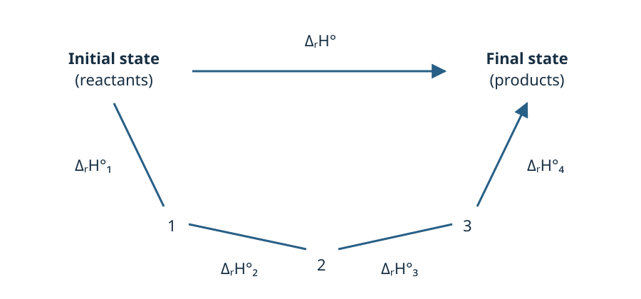

MODULE 5 / 6
Hess cycles
Calculate a reaction enthalpy using tabulated data and known processes.
Hess's law and diagrams
Hess's law follows from H being a state function. Two paths connecting exactly the same initial and final states give the same enthalpy change. The composition, amounts, phases, temperature and pressure of those states must be preserved.
The steps of the cycle may be hypothetical: they provide a calculation without necessarily describing the actual reaction mechanism. A closed cycle returns to its starting state; its total enthalpy change is zero.
Hess's law
Consider an overall reaction leading from an initial to a final state. A sequence of reactions may connect the same states: the enthalpy change accompanying the overall reaction is the sum of the enthalpies of the successive reactions.
Why is it called a cycle?
A cycle returns to its starting point. In a Hess diagram, the indirect path can be followed from the initial to the final state, then the direct path in reverse. This closes the loop.
Since enthalpy is a state function, the two paths connecting the same states have the same enthalpy change.

Use the data in the correct direction for the chosen cycle and with the correct stoichiometry.
- Reversing a reaction changes the sign of its enthalpy.
- Multiplying an equation by a number multiplies its enthalpy by that number.
- Add the equations to recover the target reaction.
Using dissociation enthalpies
To form HCl(g) from H₂(g) and Cl₂(g), the calculation can be split into two steps: dissociate the reactant bonds, then form the H–Cl bond.
Dissociation requires energy; bond formation is the reverse process.
Keeping phases consistent in cycles
A species on both sides of a sum of equations can be cancelled only if its formula and physical state are identical. H₂O(l) and H₂O(g), or a pure substance and the same dissolved substance (aq), cannot cancel directly.
To connect them, add the missing process and its enthalpy: vaporisation, condensation, sublimation or dissolution. All combined data must refer to the same temperature or to the explicitly chosen temperature approximation.
For example, for two moles of water at the same temperature: ΔrH°combustion with H₂O(l) = ΔrH°combustion with H₂O(g) − 2ΔvapH°. Condensation gives a negative contribution.
Using gaseous atoms as intermediates
To use bond enthalpies, all intermediate atoms must be gaseous. Carbon initially present as graphite must therefore undergo C(graphite) → C(g): add its sublimation enthalpy.
Count the bonds in each molecule: H₂C=CH₂ has four C–H bonds and one C=C bond. The balance is “energy required to break bonds” minus “energy released by forming bonds”, including any necessary phase transitions.
Average bond enthalpies provide an estimate: their values depend on the chemical environment. A calculation using these averages may therefore differ from one using formation enthalpies for the specific species.
Other specified enthalpies
Ionisation enthalpy
M(g) → M⁺(g) + e⁻ ; ΔionH° > 0.
Electron attachment enthalpy
M(g) + e⁻ → M⁻(g) ; ΔAEH°.
Building a cycle using combustion reactions
The propane exercise uses combustion reactions of propane, carbon and hydrogen to recover the formation reaction:
First determine the coefficient and direction of each reaction. Then add the corresponding enthalpies.
Assembling a cycle: propane example
Change the direction and coefficient of each equation to see which species cancel.
Recover the reaction 3 C(graphite) + 4 H₂(g) → C₃H₈(g) from the equations below.
- C₃H₈(g) + 5 O₂(g) → 3 CO₂(g) + 4 H₂O(l), ΔrH°₁ = −2220 kJ·mol⁻¹.
- C(graphite) + O₂(g) → CO₂(g), ΔrH°₂ = −394 kJ·mol⁻¹.
- H₂(g) + ½ O₂(g) → H₂O(l), ΔrH°₃ = −286 kJ·mol⁻¹.
A negative multiplier reverses the equation.
Data: references and notes (Hess)
Thermochemistry · Lénaïc Lartigue · Hess cycles · CC BY-NC-ND 4.0
6 concept questions
These questions cover definitions and relationships. You may try again.
Exercises
After the quiz, develop your reasoning on paper, then enter the requested results. The calculation steps are provided in the detailed solution, available after an attempt.
Your answers are stored in this browser. This record supports your practice; it is not a grade.
EXERCISE 1
Forming HCl using dissociation enthalpies
Calculate the standard enthalpy of formation of gaseous hydrogen chloride: ½ H₂(g) + ½ Cl₂(g) → HCl(g).
Molar dissociation enthalpies: H₂ = 436; Cl₂ = 243; HCl = 432 kJ·mol⁻¹, at the same temperature.
Data: references and notes (bonds)
Hint 1
Convert the reactants into the same gaseous atoms, then form HCl again.
Hint 2
Breaking a bond requires energy; forming the same bond gives the opposite contribution.
Detailed solution
1. Use gaseous atoms as intermediates. Dissociate ½ mol of H₂ and ½ mol of Cl₂: Q₁ = ½ × 436 + ½ × 243 = 339.5 kJ per mole of HCl formed.
2. Form HCl. H(g) + Cl(g) → HCl(g) is the reverse of HCl dissociation. Its contribution is therefore −432 kJ·mol⁻¹.
3. Add the steps. The intermediate atoms cancel. ΔfH°(HCl,g) = 339.5 − 432 = −92.5 kJ·mol⁻¹. Formation is exothermic.
EXERCISE 2
Building the propane cycle
Recover the reaction 3 C(graphite) + 4 H₂(g) → C₃H₈(g) from the equations below.
- C₃H₈(g) + 5 O₂(g) → 3 CO₂(g) + 4 H₂O(l), ΔrH°₁ = −2220 kJ·mol⁻¹.
- C(graphite) + O₂(g) → CO₂(g), ΔrH°₂ = −394 kJ·mol⁻¹.
- H₂(g) + ½ O₂(g) → H₂O(l), ΔrH°₃ = −286 kJ·mol⁻¹.
A negative multiplier reverses the equation.
Determine the standard enthalpy of formation of propane, in kJ·mol⁻¹.
Hint 1
Start with species that appear in only one equation.
Hint 2
Check that O₂, CO₂ and H₂O cancel before adding the enthalpies.
Detailed solution
1. Choose the direction of the equations. Propane is a product: reverse equation 1, changing the sign of its enthalpy. Multiply equation 2 by 3 and equation 3 by 4.
2. Write the processes.
3 CO₂(g) + 4 H₂O(l) → C₃H₈(g) + 5 O₂(g), +2 220 kJ·mol⁻¹ ;
3 C(graphite) + 3 O₂(g) → 3 CO₂(g), −1 182 kJ·mol⁻¹ ;
4 H₂(g) + 2 O₂(g) → 4 H₂O(l), −1 144 kJ·mol⁻¹.
3. Cancel common species. The 3 CO₂, 4 H₂O and 5 O₂ cancel. This leaves 3 C(graphite) + 4 H₂(g) → C₃H₈(g).
4. Calculate. ΔfH° = −(−2 220) + 3(−394) + 4(−286) = −106 kJ·mol⁻¹, using the given data.
EXERCISE 3
Choosing direction and coefficient
Start with H₂O(l) → H₂O(g), ΔH₁ = +40.7 kJ for one mole of water at 100 °C. The following processes occur at the same temperature.
Data: references and notes (water)
Hint 1
Apply the same operation to the enthalpy as to the equation.
Solution
1. −40.7 kJ. 2. 2 × 40.7 = +81.4 kJ. 3. No: a phase transition must be added to connect the liquid and gas.
Discussion · Hess cycles
Ask your question and describe the reasoning you find difficult. Discussions are public.
You may also ask questions by email or during an online class.